Zhongzhiyuan · Validation Campus
Public observation, low-speed testing, ecological separation, Human Review, and accessibility create a safe R&D interface.
An AI innovation urban commons on a century-old railway heritage corridor

Railway heritage is the temporal axis; all-age life is the value framework; open knowledge is the development engine; ecological resilience is public-health infrastructure. AI is accepted only as an explainable, reviewable, appealable, and withdrawable public tool.
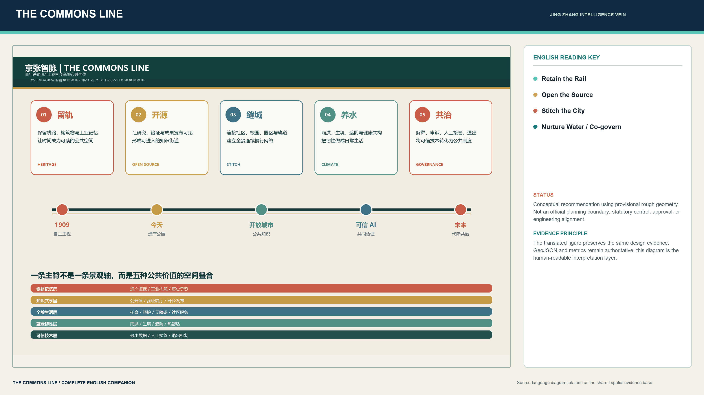
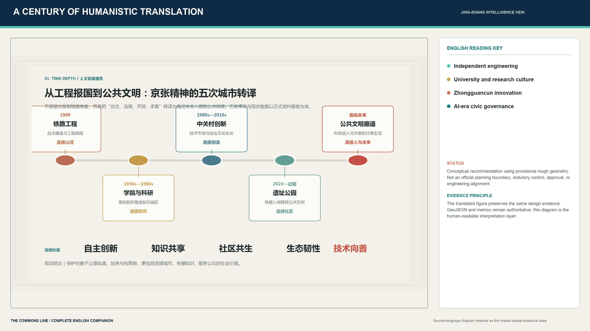
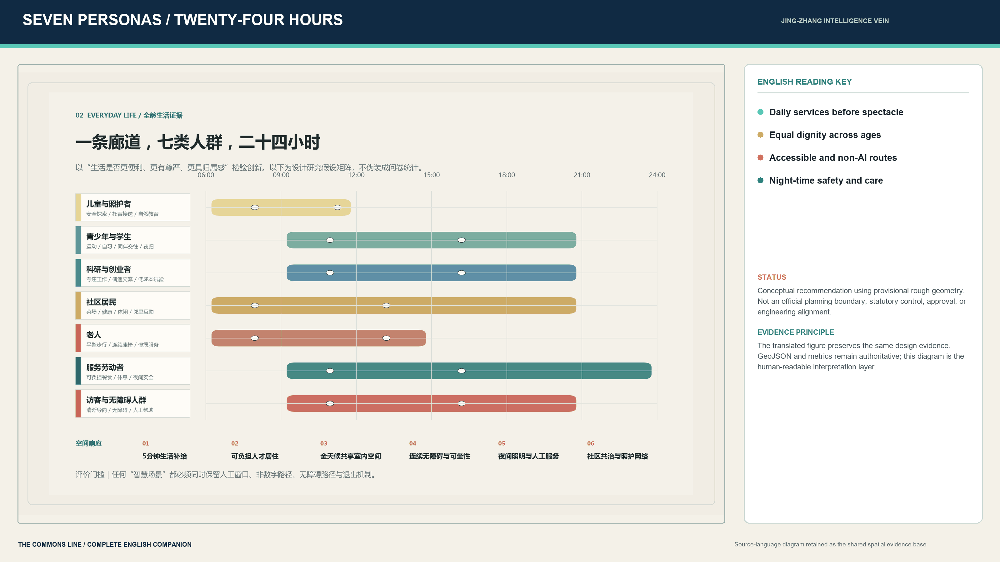
The innovation chain and all-age living chain meet on a public civic spine. Three cores specialize in validation, translation, and application; six garden types convert regional strategy into usable and operable public space.
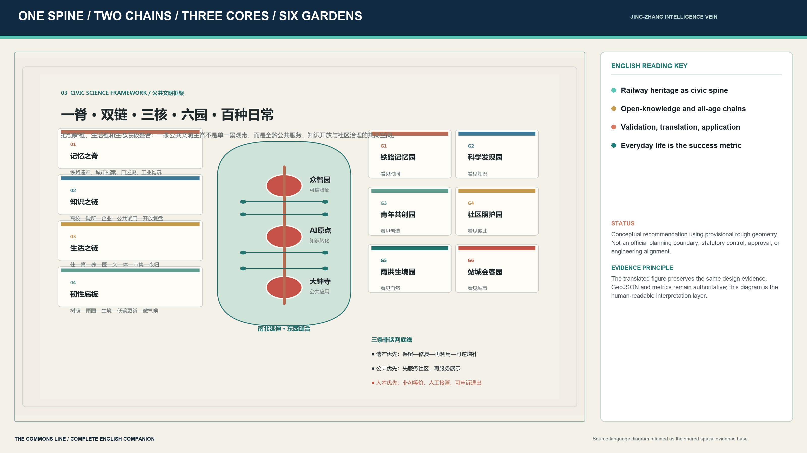
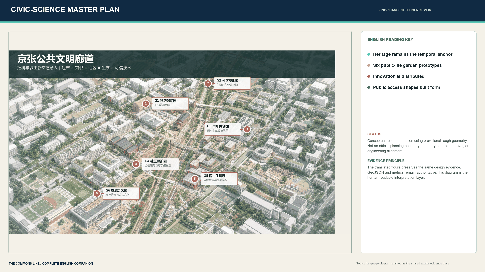
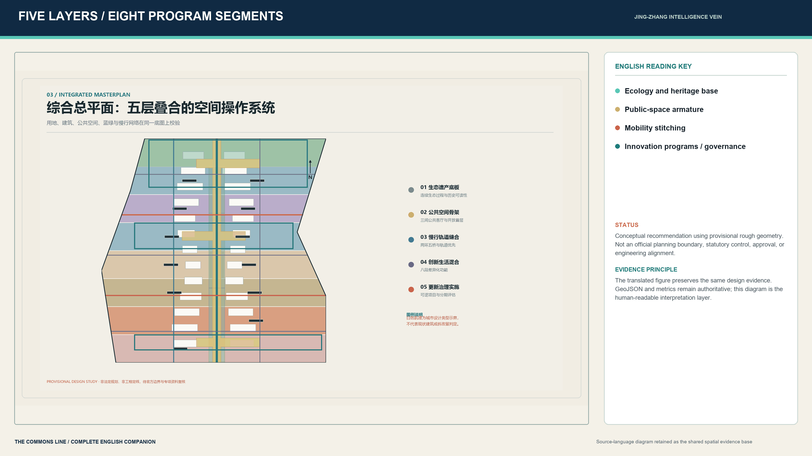
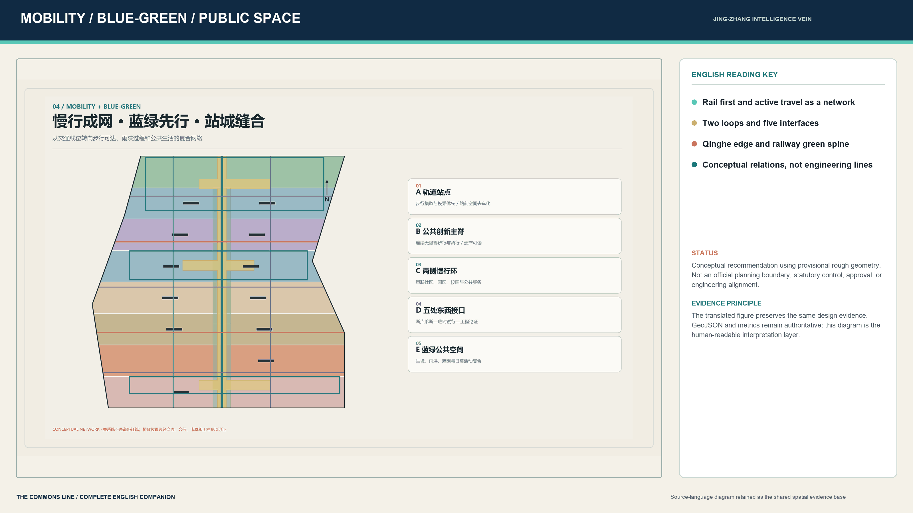
Identity explains purpose; ecosystem defines collaborators; scenario cards govern testing; public space enables encounter and scrutiny; culture carries memory; long-term operation keeps the district learning.
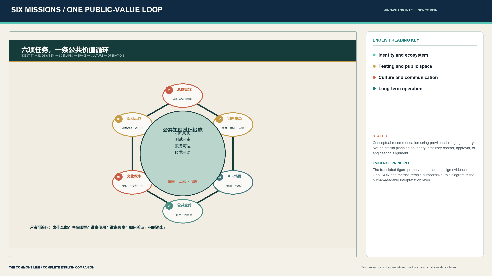
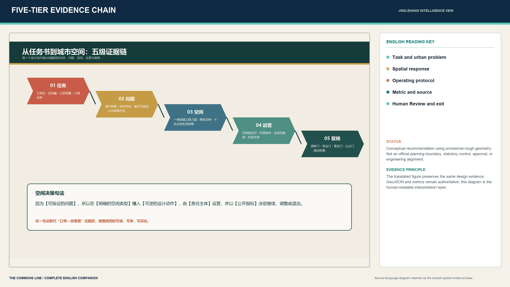
Daily support within five minutes, care within ten, and culture within fifteen: researchers, residents, and service workers share one dignified public environment.
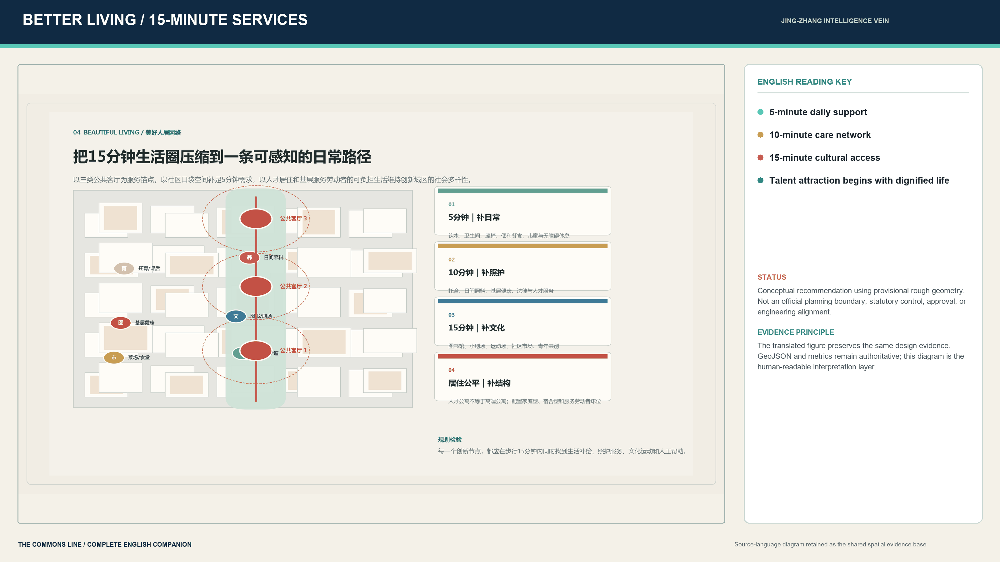
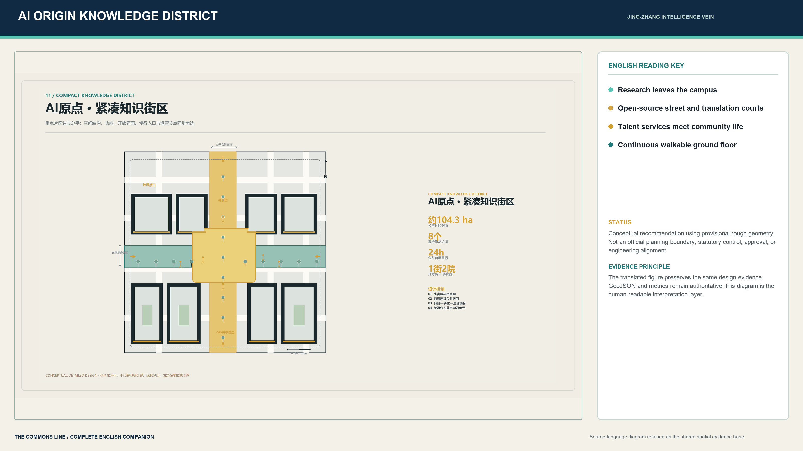
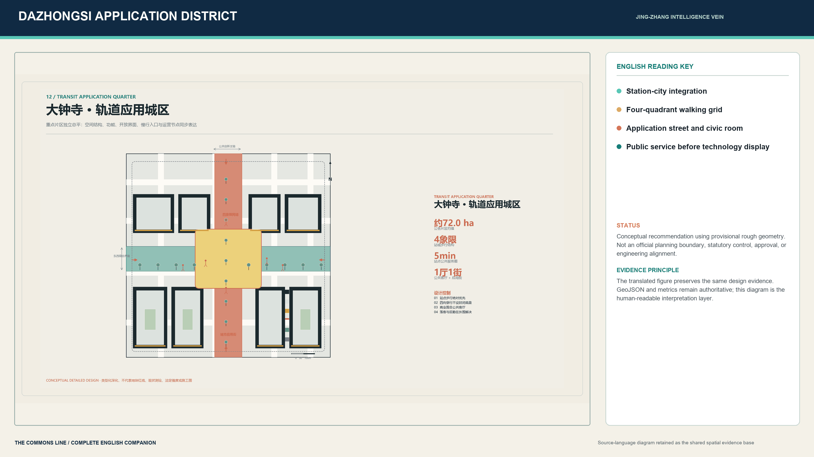
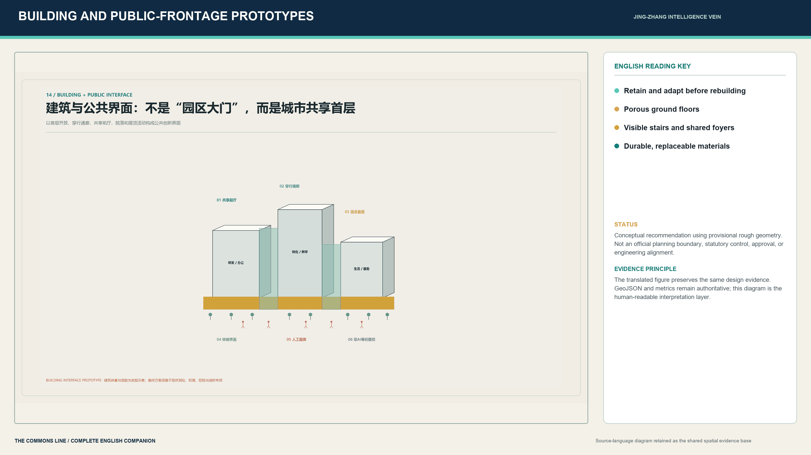
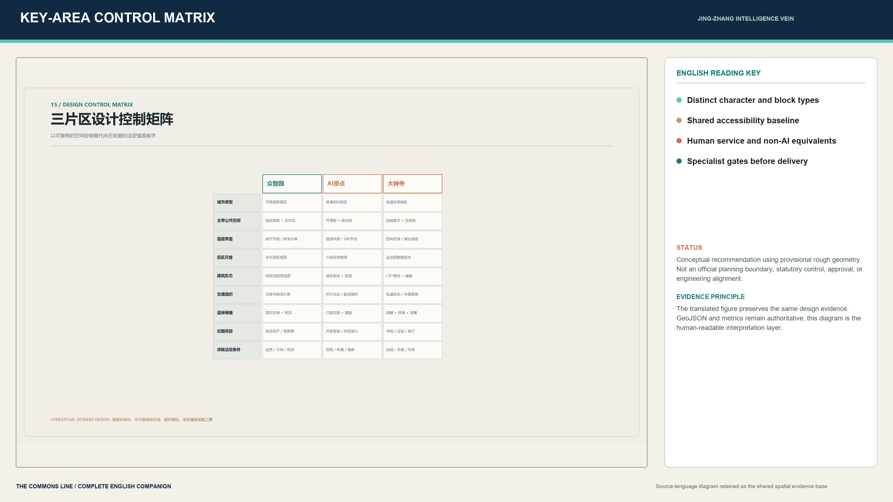
Trustworthy validation, station-city stitching, global civic science, and climate-resilient living replace repeated aerial imagery with testable spatial arguments.
Public observation, low-speed testing, ecological separation, Human Review, and accessibility create a safe R&D interface.

Four-quadrant walking, rail transfer, open ground floors, and night safety precede technology display.

Heritage hall, open-source workshops, oral history, public forum, and quiet bypass form a reversible event network.

A complete runoff path meets a dry, accessible route and seasonal habitat.
Heritage remains primary. Shade, seating, accessibility, transparent ground floors, durable materials, and low-impact lighting form Haidian's contemporary character.

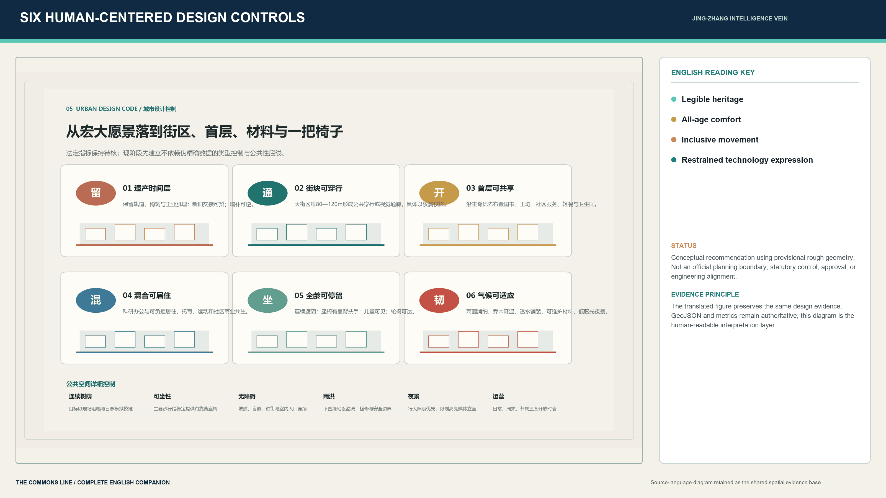
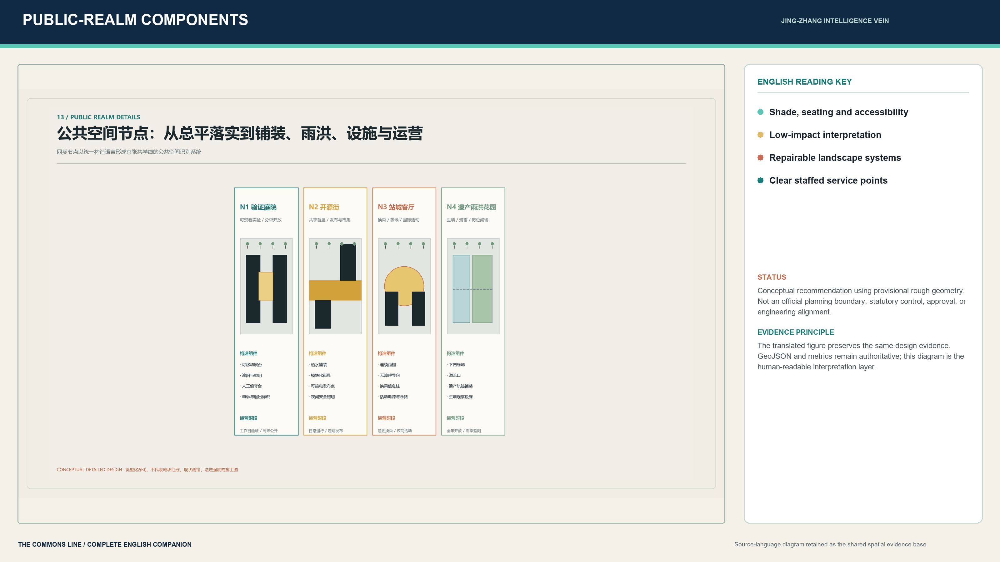
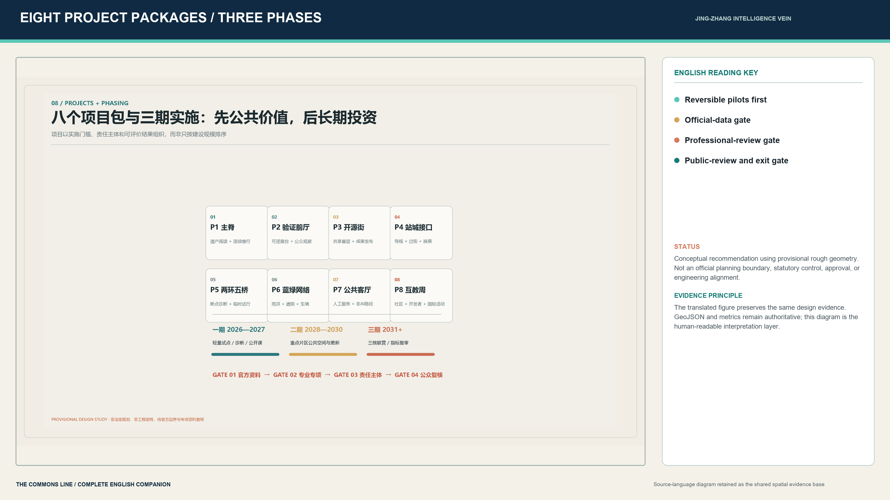
All current spatial geometry is provisional conceptual evidence for design organization and public discussion. It is not an official boundary, statutory plan, approval, or engineering basis.
Overview · Three-level scope · Key areas · Land use · Active travel · Blue-Green Space · Buildings · Renewal projects · AI-enabled scenarios
Local professional review completed. Sources: registered official public information. Assumptions: provisional boundaries and typological urban fabric require calibration against formal data.